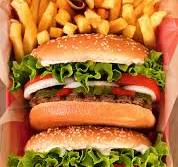

Burger Recipe

Description
A burger is a sandwich consisting of a cooked patty
(usually beef, chicken, or veggie) placed inside a
sliced bun, often with lettuce, tomato, cheese, sauces, and pickles.
Ingredients
- Ground beef or chicken
- Burger buns
- Cheese slices (optional)
- Lettuce
- Tomato slices
- Onion slices
- Pickles
- Ketchup and mustard
Steps
- Mix ground meat with salt, pepper, and spices of choice.
- Form the mixture into patties, about 1 inch thick.
- Preheat a grill or skillet over medium-high heat.
- Cook the patties for about 4-5 minutes on each side, or until fully cooked.
- If using cheese, place a slice on each patty during the last minute of cooking to melt.
- Toast the burger buns on the grill or in a toaster.
- Assemble the burger by placing the patty on the bottom bun.
- Add lettuce, tomato, onion, pickles, and any sauces you like.
- Top with the other half of the bun.
Home